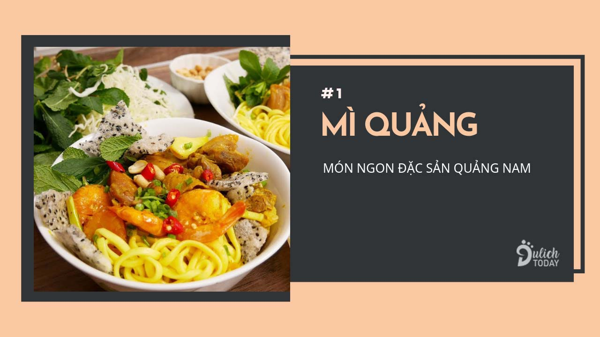
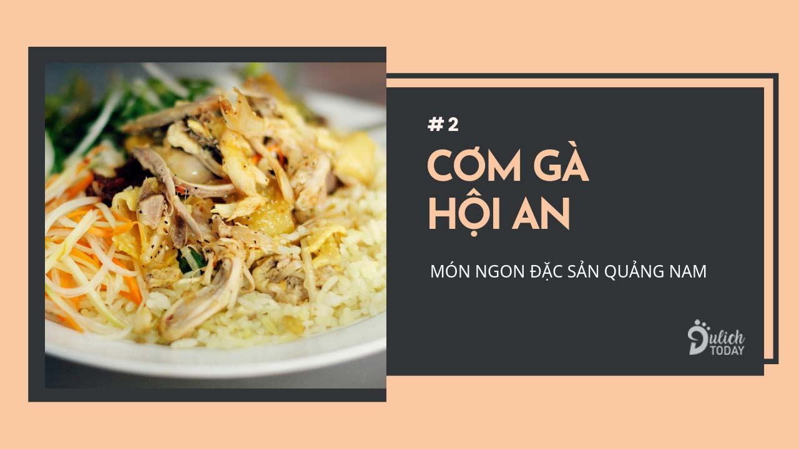
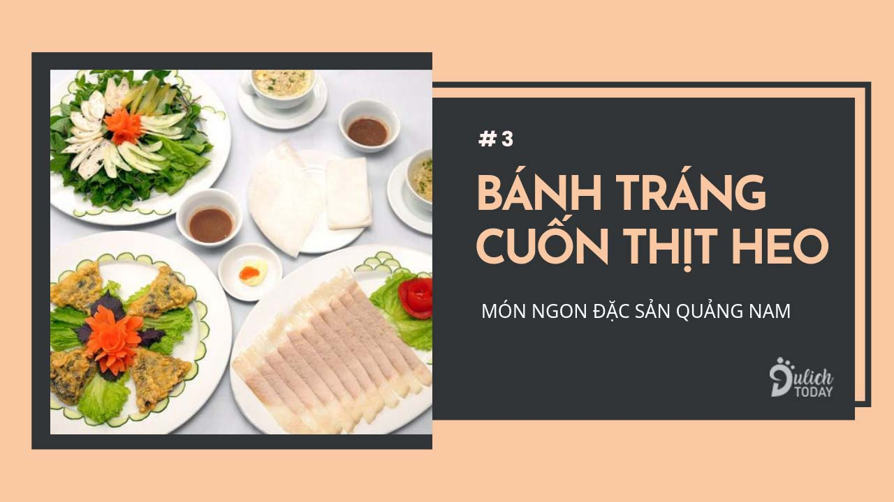
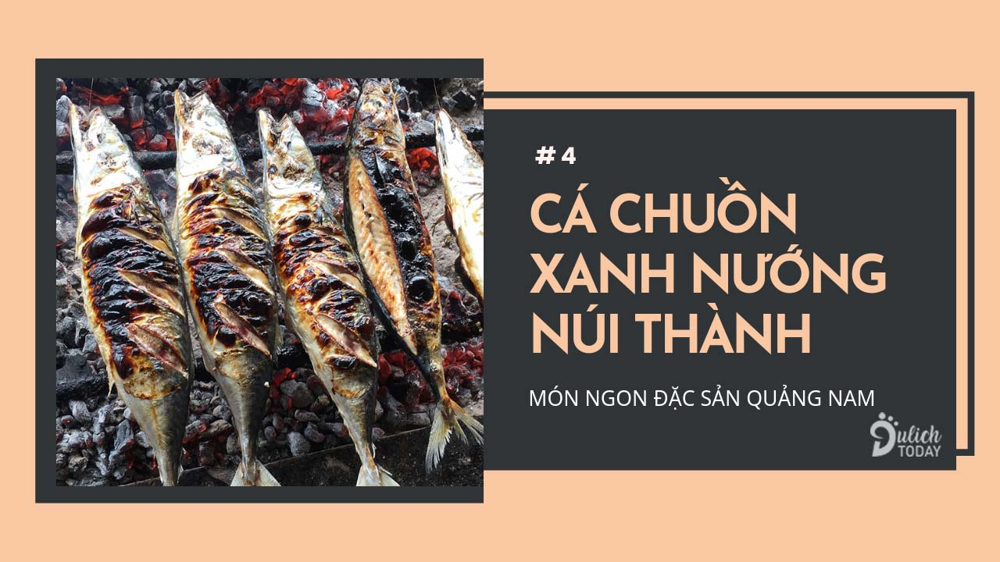
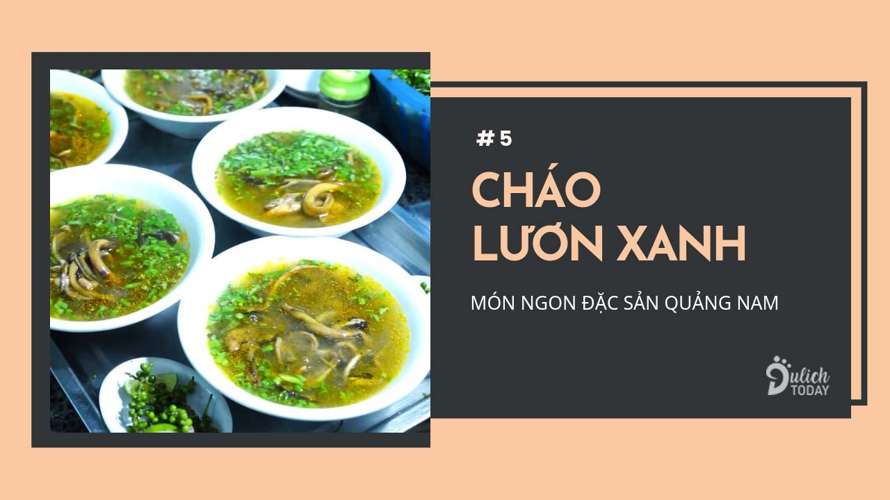
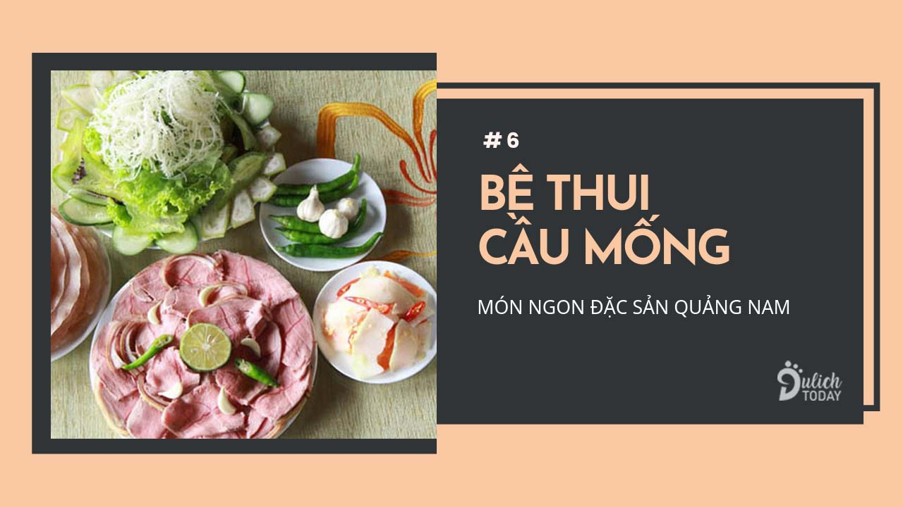
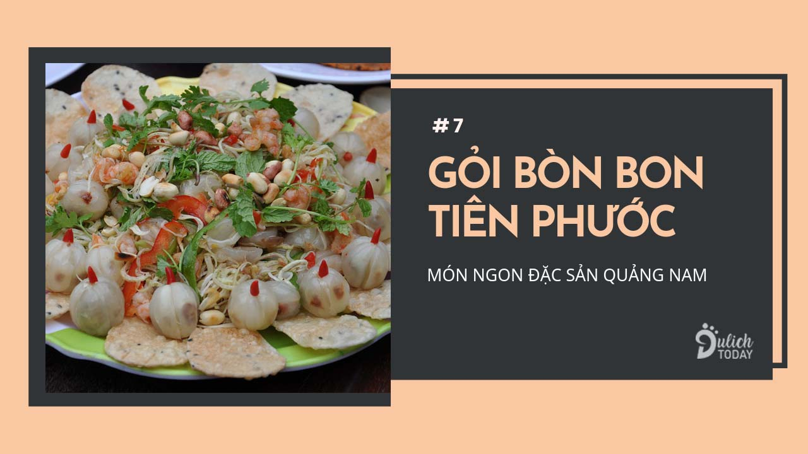
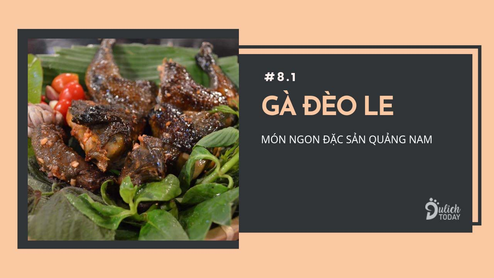
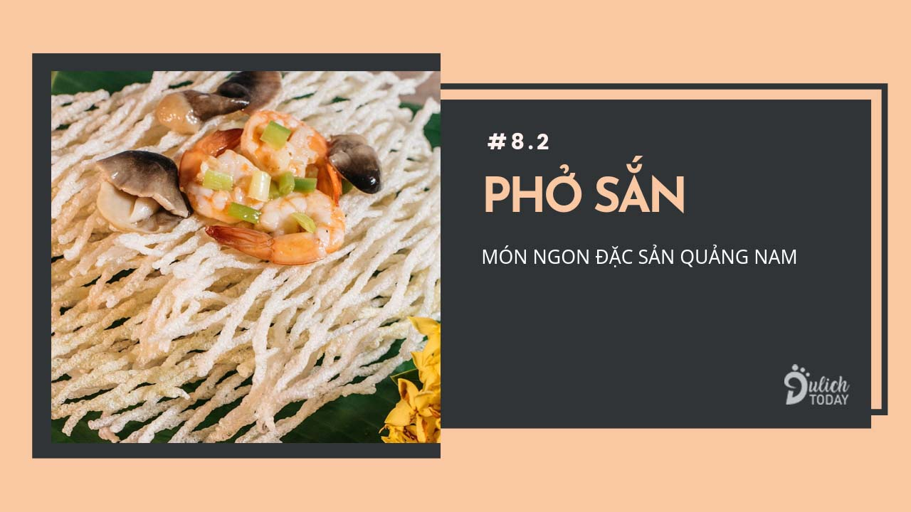

Sợi mì Quảng được chế biến từ loại gạo ngon nhất đất miền Trung, ngâm khoảng một tiếng cho gạo nở ra rồi mới đem ra xay nhỏ. Lúc xay thì cho thêm ít dầu đậu phộng với củ nén vô cho thơm. Nước dùng mì được lấy từ nước luộc tôm và thịt heo.
Mì Quảng phải ăn nóng mới ngon, vừa ăn vừa thổi vừa húp nước sột soạt mới đúng bài. Tùy khẩu vị mỗi người mà cho topping lên nhưng nước dùng thì đặc biệt chỉ chan xâm xấp thôi chứ không ngập mì như các món nước thông thường. Người Quảng Nam thường ăn kèm mì với bánh tráng nước, bẻ nhỏ rồi cho vào ăn chung. Sợi mì dai ăn cùng bánh tráng thơm thơm bùi bùi rất thú vị.
Đến Quảng Nam mà chưa ăn mì Quảng thì không khác gì chưa đến. Món ăn dân dã này đã làm nên nét đặc trưng ẩm thực có 1 không 2 của mảnh đất miền Trung đậm nghĩa tình.
Địa chỉ nơi bán mì quảng ngon ở Quảng Nam:Cơm gà là món ăn nổi tiếng luôn nằm trong top 10 món ngon đặc sản Hội An mà du khách nhất định phải thử. Ở Hội An, cứ 10 bước chân là bạn có thể bắt gặp ngay một quán cơm gà bình dân xinh xắn nhưng không khi nào ngớt khách ghé thăm.
Cơm ở đây đặc biệt ở chỗ được nấu hoàn toàn bằng bếp củi chứ không phải các loại nồi cơm điện hiện đại. Tiếp theo đó là gà để làm cơm sẽ là loại gà tơ và nuôi thả vườn nên đảm bảo thịt mềm, vị thơm ngon và không bị bở. Người Hội An luộc gà rồi xé thịt thành từng miếng nhỏ, ướp chung với hành tây, rau răm, mắm tỏi ớt rất đậm đà.
Cơm gà do nấu bằng nước luộc thịt nên ăn thơm ngọt tự nhiên, ăn không thôi cũng thấy ngon rồi chứ đừng nói là ăn kèm với gà luộc bóp gia vị. Thịt gà dai chứ không bở, thêm vị nước chấm vừa miệng khiến cho miếng nào miếng nấy ngon nức lòng người. Các quán gà Hội An thường có thêm đồ ăn kèm là đồ chua để khách hàng ăn cho đỡ ngán. Chỉ khoảng 30.000 đồng cho một món ăn đặc sản quê hương, rất xứng đáng để bạn trải nghiệm.
Địa chỉ:Cuốn thịt heo với bánh tráng là món ăn không lạ đối với mọi người. Nhưng món này lại trở thành đặc sản Quảng Nam do có nước chấm độc đáo. Đó chén mắm nêm tự tay nhà làm, thái vài lát ớt xanh thả lên trên để tạo vị cay nhẹ. Nhân bánh thì gồm có thịt heo luộc, mì lá, dưa leo, rau sống, chuối chát, xoài xanh.
Cuốn bánh tráng thì cuốn phải vừa miệng nhưng chắc tay thì lúc cắn nhân mới không bị rơi ra. Chấm cuốn ngập trong mắm nêm rồi cắn sâu, nhai kỹ, từ từ thưởng thức hương vị tuyệt vời. Thịt ba chỉ ngọt béo, giòn mát của các loại rau, chát chát chua chua từ trái,…đủ thứ chua cay mặn ngọt trên đời hòa quyện vào trong một khoảnh khắc.
Địa chỉ:Cá chuồn xanh nướng là đặc sản của huyện Núi Thành, tỉnh Quảng Nam. Loài cá thon, dài, lưng xanh, bụng trắng nõn có thể chế biến thành đủ các món ăn ngon, ăn chơi hết ý. Khi thì nấu lẩu, lúc thì kho om dưa, hồi lâu lại chiên giòn chấm nước mắm ăn giòn côm cốp
Nhưng ngon nhất vẫn là ăn nướng. Cá sơ chế sạch sẽ rồi tẩm ướp gia vị, bỏ trên bếp than hồng nướng cho đến khi nào màu da chuyển sang vàng rộm, hương thơm lừng bay ngây ngất, vậy là được.
 Địa chỉ:Cháo lươn xanh là món ăn đặc sản Quảng Nam rất hợp cho những ngày đông se lạnh. Người ta chọn lươn đồng những con to khỏe nhất cho vào hũ đất rồi cho muối vào lắc đều cho sạch rồi rửa lại với nước. Chặt lươn ra từng khúc bằng đốt tay rồi om chung với mấy thứ gia vị như xả, hành, tiêu, ớt cho dậy mùi.
Cháo nấu loãng rồi cho thêm chút muối. Lúc ăn mới múc cháo nóng hổi từ nồi ra ăn kèm với lươn.
Người Quảng Nam thường thưởng thức cháo lươn xanh với rau cải xanh tươi cắt mỏng, vài loại rau thơm, chanh, ớt và miếng bánh tráng mỏng giòn. Khi ăn thì cho hết các thứ topping cùng với lươn trộn chung đều với cháo. Vừa ăn vừa thổi thì không có cao lương mỹ vị nào mà sánh bằng.
Địa chỉ:Đặc sản Quảng Nam bê thui ngon nhất là ở Cầu Mống. Cầu Mống vốn là một cây cầu thuộc xã Điện Phương, huyện Điện Bàn, tỉnh Quảng Nam. Quanh khu vực này người ta chế biến thịt bê theo một cách rất riêng, lạ lạ, hay hay.
Bê được chọn để thui không được quá già cũng không quá non, tầm 25kg đến 35 kg là thịt vừa đủ chắc và ngọt. Lúc thui thì dùng lửa đều tay, than lúc nào cũng phải đủ nóng, đến khi phần da bê vàng ruộm thì thịt bên trong cũng vừa chín, vậy là hoàn thành.
Bê thui xong được cắt thành từng lát mỏng vừa ăn và bày ra dĩa. Người Quảng Nam hay ăn kèm bê với bánh tráng cuốn, mắm nêm, có lúc lại ăn không rồi nhấp môi vài chén rượu. Thịt bê mềm vừa đủ, lớp da ngoài thơm lừng, giòn tan, thịt ở trong lại mềm, ngọt, ăn hoài không ngán.
Địa chỉ:Quả bòn bon mà lại dùng làm gỏi nghe thật lạ tai. Đây là đặc sản Tiên Phước Quảng Nam rất phù hợp cho những bữa ăn ngày hè, vừa thanh vừa mát. Người ta chọn ra những trái bòn bon chín vàng, bóc vỏ tách múi rồi bỏ hạt. Chuẩn bị thêm tôm ram và thịt ba chỉ cộng với hành tây, rau thơm. Trộn chung các nguyên liệu với nước mắm pha đường, tỏi, ớt cho ngấm hết giá vị. Cuối cùng là rắc lên một chút đậu phộng rang giã nhuyễn cho thêm phần đẹp mắt.
Bòn bon Tiên Phước có vị ngọt tự nhiên chứ không chua như bòn bon những nơi khác. Thịt bòn bon giòn giòn, cắn một miếng là nước trái như lan tỏa hết trong khuôn miệng. Kèm với tôm và thịt ba chỉ thấm đẫm nước chấm vừa ăn, đậu phộng thơm bùi, beo béo,…quả là toàn những hương vị tuyệt vời kết hợp trong một món ăn dân dã.
Những ai đã nếm thử gỏi bòn bon Tiên Phước một lần rồi chắc chắn sẽ còn muốn ăn lần thứ hai. Người Quảng đã nghiền món này, du khách phương xa lại càng muốn ăn hoài ăn mãi.
Địa chỉ :Huyện Quế Sơn – Quảng Nam có hai món ngon đặc sản nổi tiếng là gà đèo Le và phở sắn. Không phải thứ đồ ăn xa hoa mà chính nét dân dã lại mới là điều thu hút thực khách thưởng thức món ăn này.
Gà Đèo Le là giống gà tre, thân hình nhỏ nhắn nhưng rất dẻo dai. Muốn ăn gà đèo Le chuẩn vị thì phải đến tận nơi ăn mới đã miệng. Người địa phương chế biến gà thành nhiều món ăn khác nhau như nướng, hấp, rô ti,…nhưng ngon nhất vẫn là để nguyên con rồi luộc lên. Thịt gà chắc, ngọt, mềm, thơm tự nhiên, ăn kèm với muối tiêu ớt thì ngon khỏi bàn.
Quế Sơn còn nổi tiếng với phở sắn – loại sợi dài làm từ củ sắn tươi xay thành bột rồi nấu lên vừa dẻo vừa mịn. Phở sau khi được quệt ra vỉ và phơi khô thì thành hình sợi rất đẹp mắt.
Người Quảng Nam có thể dùng phở sắn để ăn salad, chiên giòn hay dùng với nước lèo như cách ăn phở bình thường. Dù có ăn cách nào thì phở cũng mang một hương vị rất đặc trưng, dẻo, dai, thơm mùi hương đồng gió nội.
Địa chỉ: